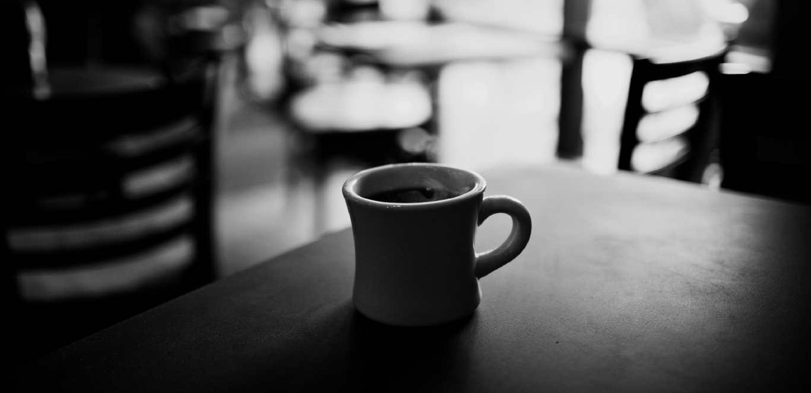

Here is the left sidebar, but if you click on the button below it'll take you to the right sidebar. Go ahead try it out.
Go to Right SidebarWelcome and thank you for visiting my website. I am currently a Richland college student, and on my way to get an associates degree in multimedia. I recently began building websites for friends and family members, so far I love building websites because I learn every single time that I hop on a computer to build a site. I have always been in love with technology and internet trends, so I'm always trying to learn as much as I can and sure it's complex at times but not impossible. I am hoping to build many more websites until I am good enough to create my own personal style in designing pages.